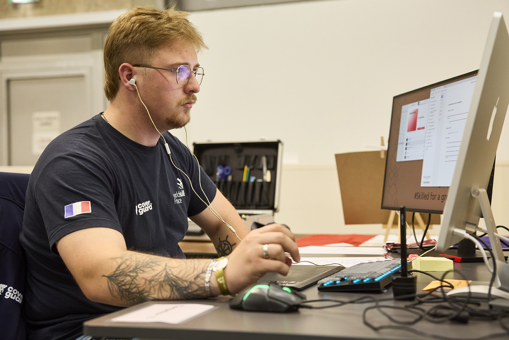

WELCOME TO MY PORTFOLIO
Lucas Pernet, 21 years old, graphic designer and student in the DSAA Culture of Animated Image in Nevers. My work focuses on visual identity, editorial design, and typographic practice. My background is marked by six years of work-study experience in graphic design, within industrial companies and printing houses. I have a strong understanding of the entire graphic production chain, from concept to project execution.
